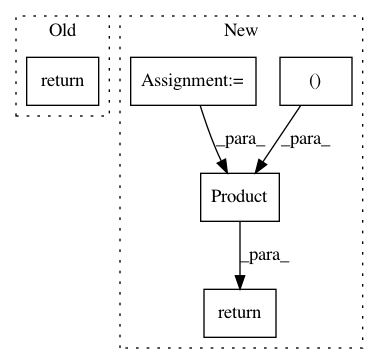

86f856e8a2ab52269e72923292cad3fc6f98e972,cistar-dev/cistar/envs/loop_accel.py,SimpleAccelerationEnvironment,observation_space,#SimpleAccelerationEnvironment#,29
Before Change
An observation is an array the velocities for each vehicle
self.obs_var_labels = ["Velocity"]
return Box(low=-np.inf, high=np.inf, shape=(self.scenario.num_vehicles, ))
def apply_action(self, car_id, action):
See parent class (base_env)
After Change
See parent class
An observation is an array the velocities for each vehicle
speed = Box(low=-np.inf, high=np.inf, shape=(self.scenario.num_vehicles,))
absolute_pos = Box(low=0., high=np.inf, shape=(self.scenario.num_vehicles,))
return Product([speed, absolute_pos])
def apply_action(self, car_id, action):
See parent class (base_env)
In pattern: SUPERPATTERN
Frequency: 3
Non-data size: 5
Instances
Project Name: flow-project/flow
Commit Name: 86f856e8a2ab52269e72923292cad3fc6f98e972
Time: 2017-05-31
Author: akreidieh@gmail.com
File Name: cistar-dev/cistar/envs/loop_accel.py
Class Name: SimpleAccelerationEnvironment
Method Name: observation_space
Project Name: sympy/sympy
Commit Name: a732984b582e2869665c6448d35cad2c4178ad94
Time: 2021-02-09
Author: harshityadav2k@gmail.com
File Name: sympy/concrete/products.py
Class Name: Product
Method Name: _eval_derivative
Project Name: flow-project/flow
Commit Name: 4e2a5cb241b8cd957a1ff08787c4304426dc4a86
Time: 2017-06-09
Author: eugenevinitsky@airbears2-10-142-37-84.airbears2.1918.berkeley.edu
File Name: cistar-dev/cistar/envs/lane_changing.py
Class Name: SimpleLaneChangingAccelerationEnvironment
Method Name: action_space